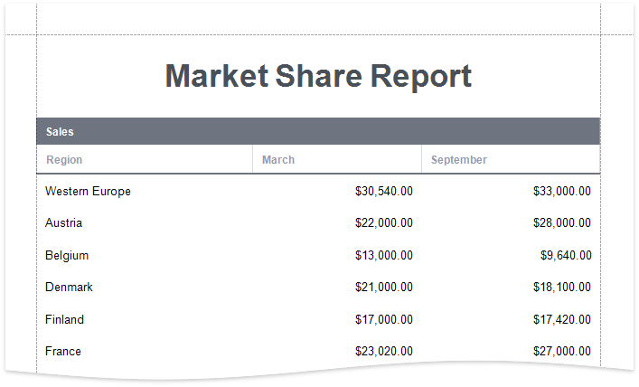
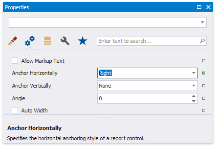
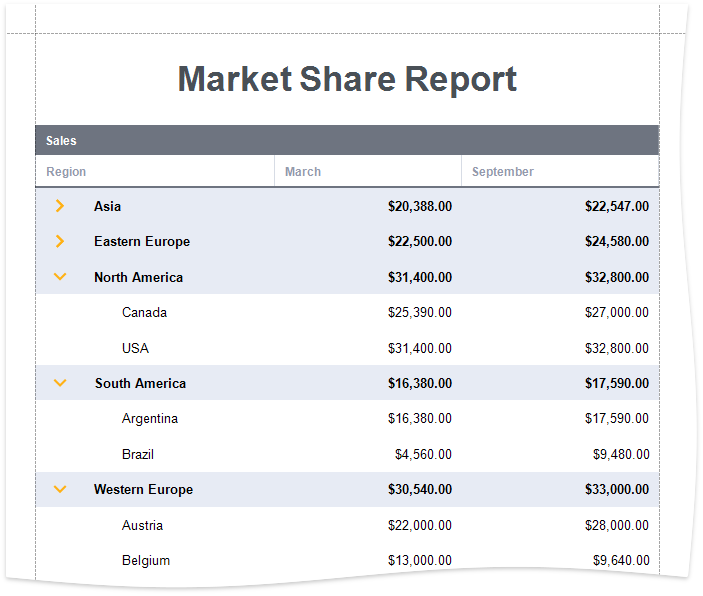

Hierarchical Reports
This tutorial describes how to use the detail band's Hierarchy Print Options property to create a hierarchical report.

Bind the report to a required data source.
The following image demonstrates an empty report bound to an ObjectDataSource.

Each record in this data source includes the "parent ID" field that defines the parent-child relationship and thus builds the hierarchy.
Arrange controls on the report.
- Add the Report Header and Page Header bands (see the Manage Report Bands | Add Bands section in the Introduction to Banded Reports document for details)
Add data-bound labels to the Detail band.

Switch to the Preview tab to see an intermediate result.

Specify the Detail band's Hierarchy Print Options property.

Set the following options:
Key Field Name and Parent Field Name, or Child List Field Name
Set the Key Field Name and Parent Field Name properties if your report's data has the Id-ParentID related fields.
Set the Child List Field Name property if your report's data is recursive. Assign the collection of child objects (records) if they have the same type as the parent objects (records).Indent
Specify the child level node offset.Keep Together with First Child
Specify whether to print a parent node together with its first child node on the next page if these nodes do not fit at the end of a page.
As you can see in the image above, the Detail band that contains child rows is printed with the specified indent. However, the row (the sum of the label widths) does not fit the page now.
Align labels.
Anchor the first data-bound label to the Detail band's left and right edges. Set the label's Anchor Horizontally property to Both.

Anchor the rest of the data-bound labels to the right edge of the Detail band (their container). Set their Anchor Horizontal property to Rignt.


Add a drill-down control to expand/collapse child rows.
Add the Check Box control to the Detail band at the left-most position.

Set the Check Box control's glyph options. Use custom glyphs for the checked and unchecked checkbox states.

Set the Detail band's Drill Down Control property to the added Check Box control.

Set the Check Box's Check State property to the following expression: [ReportItems].[Detail].[DrillDownExpanded] (in the control's Smart Tag or the Property Grid's Expressions tab).


Sort report data.
Use the Detail band's Sort Fields property to sort data on each hierarchy level.


Highlight root nodes.
To format rows based on their nesting level, use the Current Row Hierarchy Level variable in expressions. For example, specify the Detail band's appearance properties as listed below:
- Set the Back Color property to iif([DataSource.CurrentRowHierarchyLevel] == 0, Rgb(231,235,244), ?)
Set the Font | Bold property to [DataSource.CurrentRowHierarchyLevel] == 0

